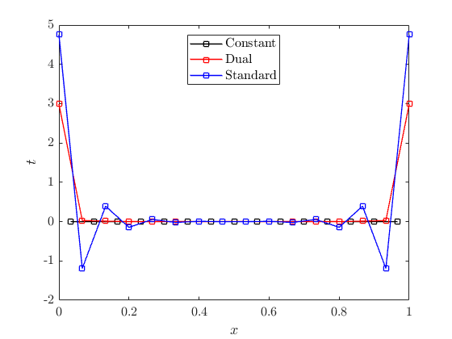
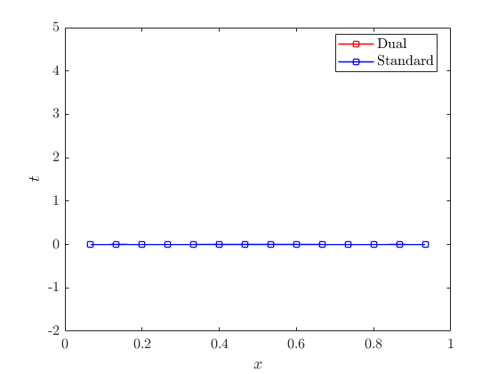
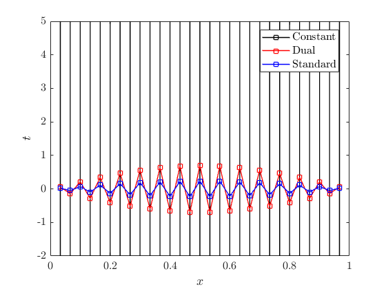
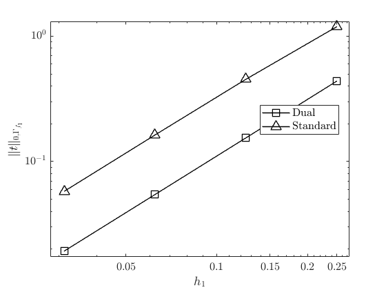

Contents
x = load("xCoord.mat");
x_p0 = x.P0;
x_m1 = x.m1;
x_m2 = x.m2;
m1 = load("method1.mat");
m2 = load("method2.mat");
P0 = m1.P0;
dual_1 = m1.DUAL;
standard_1 = m1.STANDARD;
dual_2 = m2.DUAL;
standard_2 = m2.STANDARD;
figure(1)
plot(x_p0, P0, 'k-s', 'LineWidth', 1)
hold on
plot(x_m1, dual_1, 'r-s', 'LineWidth', 1)
plot(x_m1, standard_1, 'b-s', 'LineWidth', 1)
ylim([-2 5]);
legend('Constant', 'Dual', 'Standard', 'Interpreter', 'latex', 'Location', 'best', 'FontSize', 12);
xlabel('$x$', 'Interpreter', 'latex', 'FontSize', 12);
ylabel('$t$', 'Interpreter', 'latex', 'FontSize', 12);
ax = gca;
ax.TickLabelInterpreter = 'latex';
ax.FontSize = 12;
figure(2)
plot(x_m2, dual_2, 'r-s', 'LineWidth', 1)
hold on
plot(x_m2, standard_2, 'b-s', 'LineWidth', 1)
ylim([-2 5]);
legend('Dual', 'Standard', 'Interpreter', 'latex', 'Location', 'best', 'FontSize', 12);
xlabel('$x$', 'Interpreter', 'latex', 'FontSize', 12);
ylabel('$t$', 'Interpreter', 'latex', 'FontSize', 12);
ax = gca;
ax.TickLabelInterpreter = 'latex';
ax.FontSize = 12;
 
Third Figure - finer slave - instabilities
figure(3)
xCoord2 = load('xCoord2.mat');
out = load('out.mat');
x_p0 = xCoord2.p0;
x_col = xCoord2.colocated;
dual = out.dual;
standard = out.standard;
p0 = out.p0;
plot(x_p0, p0, 'k-s', 'LineWidth', 1)
hold on
plot(x_col, standard, 'r-s', 'LineWidth', 1)
plot(x_col, dual, 'b-s', 'LineWidth', 1)
ylim([-2 5]);
legend('Constant', 'Dual', 'Standard', 'Interpreter', 'latex', 'Location', 'best', 'FontSize', 12);
xlabel('$x$', 'Interpreter', 'latex', 'FontSize', 12);
ylabel('$t$', 'Interpreter', 'latex', 'FontSize', 12);
ax = gca;
ax.TickLabelInterpreter = 'latex';
ax.FontSize = 12;

fig. 4 - multipliers convergence profile
figure(4)
out = load('outConv.mat');
h = out.h(1:end-1);
dual = out.L2dual;
standard = out.L2stand;
loglog(h, dual, 'k-s', 'LineWidth', 1,'MarkerSize',10)
hold on
loglog(h, standard, 'k-^', 'LineWidth', 1,'MarkerSize',10)
legend('Dual', 'Standard', 'Interpreter', 'latex', 'Location', 'best', 'FontSize', 12);
xlabel('$h_1$', 'Interpreter', 'latex', 'FontSize', 12);
ylabel('$\|t\|_{0,\Gamma_{f_1}}$', 'Interpreter', 'latex', 'FontSize', 12);
ax = gca;
ax.TickLabelInterpreter = 'latex';
ax.FontSize = 12;
xlim([min(h) * 0.9, max(h) * 1.1]);
ylim([min([dual; standard]) * 0.9, max([dual; standard]) * 1.1]);
exportgraphics(figure(4), 'conv_profile.pdf', 'Resolution', 300);

fig 5: non integer resolution ratio